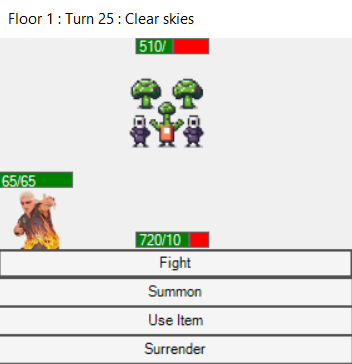
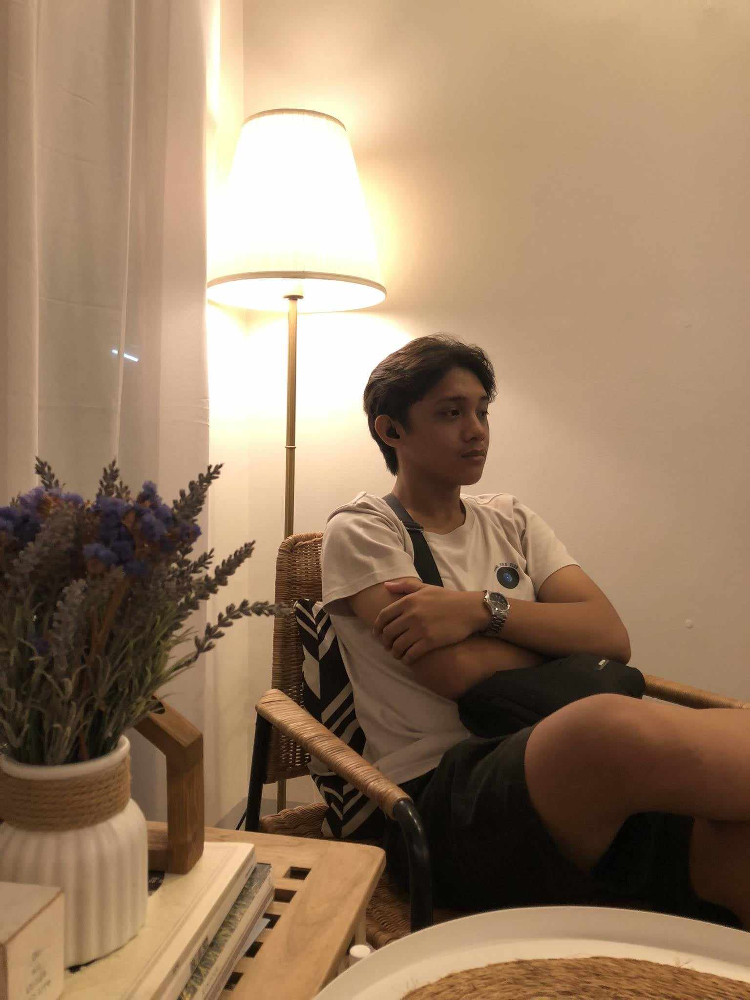

Chibogers: The Foodpocalypse
A playable project built for my portfolio and highlighted here as the main showcase piece.
See more work
Selected work
These placements give the homepage a more modern feel while pointing visitors toward the full portfolio.

A playable project built for my portfolio and highlighted here as the main showcase piece.
See more workA reserved space for the next project update, prototype, or class requirement.
An additional card that keeps the layout balanced while leaving room for more work.